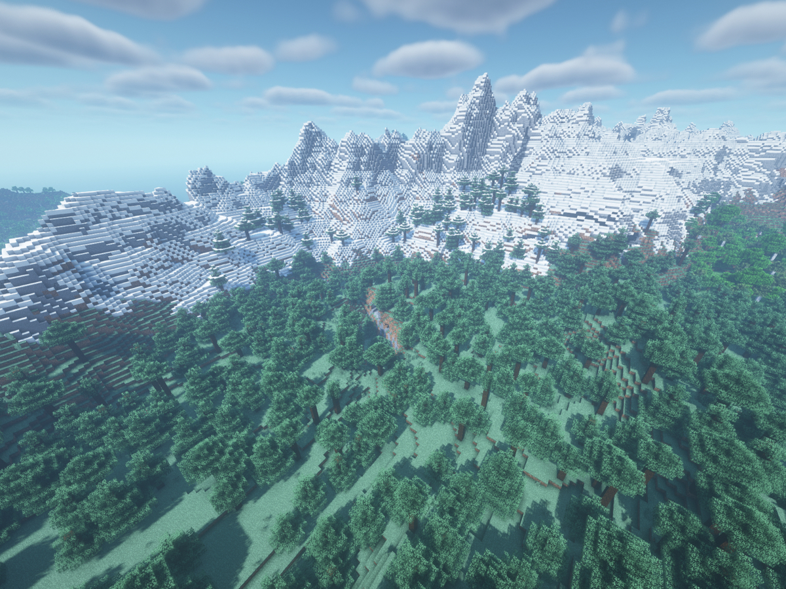
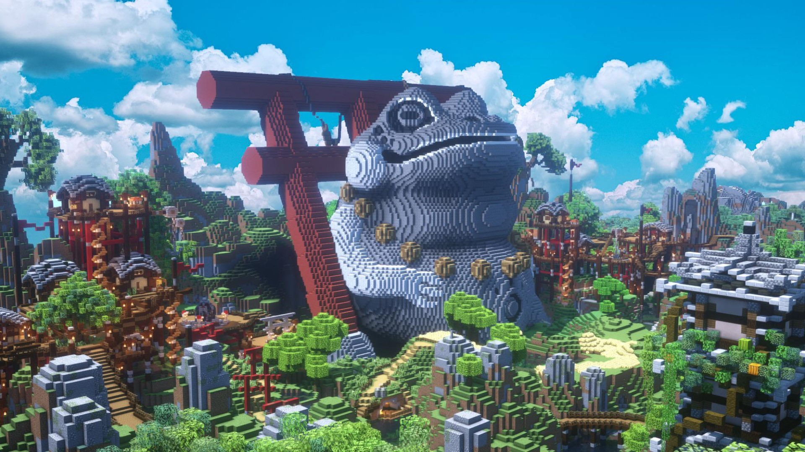

Recenzja: Minecraft
Data wydania: 18 Listopada 2011
Minecraft to dość nietypowa gra survival, która bardzo skupia się na kreatywności gracza i generowaniu pięknego terenu.
Gra ta pozwala graczowi na zniszczenie każdego bloku na całej mapie i użycia go do stworzenia jego własnej, kreatywnej budowli.
Kolejnym atutem gry jest generator świata, który na bieżąco tworzy kolejne obszary, bazując na seedzie świata. Generuje on rozmaite i urokliwe biomy, każdy różniący się od siebie. Niczym nieskrępowana wolność działania to niezaprzeczalna siła tej produkcji.
